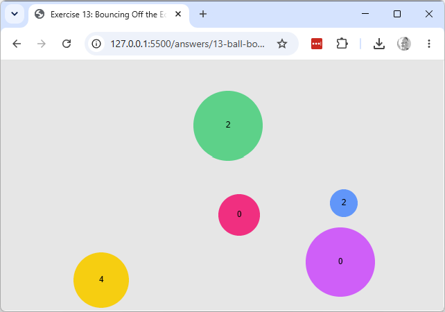

Explore & modify
Working copy: exercises/13-ball-bounce/.
- Comment out the
diameter > widthspecial-case branch, then run the sketch with a ball whosediameteris larger than the canvas. Explain the bug this branch exists to prevent. - Add a
bouncesproperty toBall, initialised to0in the constructor, and increment it inside each collision branch. Display each ball's bounce count next to it withtext().

- Click-to-add. Bring back
mousePressed()from 03-click-to-draw: add amousePressed()function so that clicking adds one new ball (with random position/velocity/colour, as in therandom()exercise from exercise 10) to theballsarray. The existing balls should keep moving and bouncing exactly as before; the new ball should join them and start moving too. - Boolean combination — corner detection. Detect when a ball is touching a vertical edge
and a horizontal edge in the same frame (i.e. it's hit a corner), and give it a brief,
visibly different effect when that happens (a colour change is enough). This introduces
&&, for combining two boolean conditions into one. - Boolean state on an object — hover highlight. Add an
isHoveredproperty to theBallclass. Each frame, set it totrueorfalseby comparing the distance from the mouse to the ball's centre (dist()) against the ball's radius. WhenisHoveredistrue, display the ball with a different fill colour. (Can start from 09-ball-class instead, with a single ball, if you'd rather work without the animation running.) - Object-to-object interaction — ball vs. ball (capstone). For every pair of balls in the
array, use
dist()between their centres compared to the sum of their radii to detect whether they're overlapping. When two balls collide, respond somehow — reversing both their velocities, or changing their colour, are both reasonable. This is the first interaction that's between two objects, rather than one object and the canvas edge.